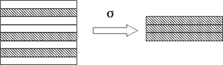
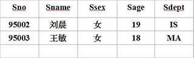
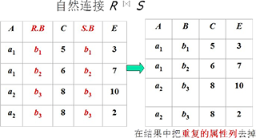
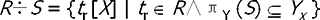

- 单一的数据结构----关系
- 数据的逻辑结构----二维表
- 关系模型建立在集合代数的基础上
- 关系数据结构的基本概念
- 域（Domain）
- 域是一组具有相同数据类型的值的集合。例:
- 整数
- 实数
- 介于某个取值范围的整数
- 长度指定长度的字符串集合
- {‘男’，‘女’}
- 介于某个取值范围的日期
- 笛卡尔积（Cartesian Product）
- 笛卡尔积
- 给定一组域D1，D2，…，Dn，这些域中可以有相同的。D1，D2，…，
Dn的笛卡尔积为：D1×D2×…×Dn＝｛（d1，d2，…，dn）｜di∈Di，i＝1，2，…，n｝
- 所有域的所有取值的一个组合，不能重复
- 元组（Tuple）
- 笛卡尔积中每一个元素（d1，d2，…，dn）叫作一个n元组（n-tuple）或简称元组。
- 分量（Component
- 笛卡尔积元素（d1，d2，…，dn）中的每一个值di叫作一个分量。
- 基数（Cardinal number）
- 若Di（i＝1，2，…，n）为有限集，其基数为mi（i＝1，2，…，n），则D1×D2×…×Dn的基数M为：
- 笛卡尔积的表示方法
- 笛卡尔积可表示为一个二维表。表中的每行对应一个元组，表中的每列对应一个域。
- 关系（Relation）
- 关系
- D1×D2×…×Dn的子集叫作在域D1，D2，…，Dn上的关系，表示为 R（D1，D2，…，Dn）
- R：关系名
- n：关系的目或度（Degree）
- 元组
- 单元关系与二元关系
- 当n=1时，称该关系为单元关系（Unary relation）。
- 当n=2时，称该关系为二元关系（Binary relation）。
- 关系的表示
- 关系也是一个二维表，表的每行对应一个元组，表的每列对应一个域。
- 属性
- 关系中不同列可以对应相同的域，为了加以区分，必须对每列起一个名字，称为属性（Attribute）。
- n目关系必有n个属性。
- 码
- 候选码（Candidate key）
- 若关系中的某一属性组的值能唯一地标识一个元组，则称该属性组为候选码
- 在最简单的情况下，候选码只包含一个属性。
- 全码（All-key）
- 在最极端的情况下，关系模式的所有属性组是这个关系模式的候选码，称为全码（All-key）
- 主码（Primary key）
- 若一个关系有多个候选码，则选定其中一个为主码（Primary key）
- 主码的诸属性称为主属性（Prime attribute）。不包含在任何侯选码中的属性称为非码属性（Non-key attribute）
- 三类关系
- 基本关系（基本表或基表）
- 查询表
- 视图表
- 由基本表或其他视图表导出的表，是虚表，不对应实际存储的数据
- 基本关系的性质
- 列是同质的（Homogeneous）
- 不同的列可出自同一个域
- 其中的每一列称为一个属性,不同的属性要给予不同的属性名
- 列的顺序无所谓
- 列的次序可以任意交换
- 遵循这一性质的数据库产品(如ORACLE)，增加新属性时，永远是插至最后一列
但也有许多关系数据库产品没有遵循这一性质，例如FoxPro仍然区分了属性顺序
- 任意两个元组不能完全相同
- 由笛卡尔积的性质决定
- 但许多关系数据库产品没有遵循这一性质。
- 例如:
- Oracle，FoxPro等都允许关系表中存在两个完全相同的元组，
除非用户特别定义了相应的约束条件。
- 行的顺序无所谓
- 行的次序可以任意交换
- 遵循这一性质的数据库产品(如ORACLE)，插入一个元组时永远插至最后一行
但也有许多关系数据库产品没有遵循这一性质，例如FoxPro仍然区分了元组的顺序
- 分量必须取原子值
- 关系模式（Relation Schema）是型
- 关系是值
- 关系模式是对关系的描述
- 元组集合的结构
- 元组语义以及完整性约束条件
- 属性间的数据依赖关系集合
- 关系模式可以形式化地表示为：R（U，D，dom，F）
- R 关系名
- U 组成该关系的属性名集合
- D 属性组U中属性所来自的域
- dom 属性向域的映象集合
- F 属性间的数据依赖关系集合
- 例:导师和研究生出自同一个域――人，取不同的属性名，并在模式中定义属性向域的映象，即说明它们分别出自哪个域：
- dom（SUPERVISOR-PERSON)
- =dom（POSTGRADUATE-PERSON）
- =PERSON
- 关系模式通常可以简记为R(U)或R (A1，A2，…，An)
- R 关系名
- A1，A2，…，An 属性名
- 注：域名及属性向域的映象常常直接说明为属性的类型、长度
- 关系模式
- 对关系的描述
- 关系模式在某一时刻的状态或内容
- 动态的、随时间不断变化的
- 关系模式和关系往往统称为关系
- 通过上下文加以区别
- 关系数据库
- 在一个给定的应用领域中，所有实体及实体之间联系的关系的集合构成一个关系数据库。
- 关系数据库的型与值
- 关系数据库也有型和值之分
- 关系数据库的型称为关系数据库模式，是对关系数据库的描述
- 关系数据库的值是这些关系模式在某一时刻对应的关系的集合，通常简称为关系数据库
关系模型的完整性规则是对关系的某种约束条件。关系模型中三类完整性约束：
- 实体完整性规则（Entity Integrity）若属性A是基本关系R的主属性，则属性A不能取空值
- 例:SAP(SUPERVISOR，SPECIALITY，POSTGRADUATE)POSTGRADUATE属性为主码（假设研究生不会重名），则其不能取空值
- 关系模型必须遵守实体完整性规则的原因
- 实体完整性规则是针对基本关系而言的。一个基本表通常对应现实世界的一个实体集或多对多联系。
- 现实世界中的实体和实体间的联系都是可区分的，即它们具有某种唯一性标识。
- 相应地，关系模型中以主码作为唯一性标识。
- 主码中的属性即主属性不能取空值。空值就是“不知道”或“无意义”的值。
主属性取空值，就说明存在某个不可标识的实体，即存在不可区分的实体，这与第（2）点相矛盾，因此这个规则称为实体完整性。
- 关系间的引用
- 在关系模型中实体及实体间的联系都是用关系来描述的，因此可能存在着关系与关系间的引用。
- 外码（Foreign Key）
- 设F是基本关系R的一个或一组属性，但不是关系R的码。如果F与基本关系S的主码Ks相对应，
- 则称F是基本关系R的外码基本关系R称为参照关系（Referencing Relation）
- 基本关系S称为被参照关系（ReferencedRelation）或目标关系（Target Relation）。
- 说明
- 关系R和S不一定是不同的关系
- 目标关系S的主码Ks 和参照关系的外码F必须定义在同一个（或一组）域上
- 外码并不一定要与相应的主码同名当外码与相应的主码属于不同关系时，往往取相同的名字，以便于识别
- 简而言之：在两个参照和被参照的关系中，参照关系中的每个元组的外码或者为空或者等于被参照关系中的某个元组的主码
- 参照完整性规则
- 若属性（或属性组）F是基本关系R的外码它与基本关系S的主码Ks相对应（基本关系R和S不一定是不同的关系），
则对于R中每个元组在F上的值必须为：
- 或者取空值（F的每个属性值均为空值）
- 或者等于S中某个元组的主码值。
- 用户定义的完整性是针对某一具体关系数据库的约束条件，反映某一具体应用所涉及的数据必须满足的语义要求。
- 关系模型应提供定义和检验这类完整性的机制，以便用统一的系统的方法处理它们，而不要由应用程序承担这一功能。
- 关系代数
- 关系代数运算的三个要素
- 运算对象：关系
- 运算结果：关系
- 运算符：四类――集合运算符，专门的关系运算符，比较运算符，逻辑运算符
- 集合运算符
- 将关系看成元组的集合
- 运算是从关系的“水平”方向即行的角度来进行
- 专门的关系运算符
- 算术比较符
- 逻辑运算符
- 关系代数运算的分类
- 表示记号
- R，t∈R，t[Ai]设关系模式为R(A1，A2，…，An)它的一个关系设为R。t∈R表示t是R的一个元组t[Ai]则表示元组t中相应于属性Ai的一个分量
- A，t[A]，A若A={Ai1，Ai2，…，Aik}，其中Ai1，Ai2，…，Aik是A1，A2，…，An中的一部分，
则A称为属性列或域列。t[A]=(t[Ai1]，t[Ai2]，…，t[Aik])表示元组t在属性列A上诸分量的集合。
A则表示{A1，A2，…，An}中去掉{Ai1，Ai2，…，Aik}后剩余的属性组。
- 并
- R和S
- 具有相同的目n（即两个关系都有n个属性）
- 相应的属性取自同一个域
- R∪S
- 仍为n目关系，由属于R或属于S的元组组成R∪S = { t|t∈R∨t∈S }
- 差
- R和S
- R - S
- 仍为n目关系，由属于R而不属于S的所有元组组成R -S = { t|t∈R∧t∈S }
- 交
- R和S
- R∩S
- 仍为n目关系，由既属于R又属于S的元组组成 R∩S = { t|t∈R∧t∈S },R∩S = R C(R-S）
- 广义笛卡尔积
- R
- S
- R×S
- 列：（n+m）列的元组的集合
- 元组的前n列是关系R的一个元组
- 后m列是关系S的一个元组
- 行：k1×k2个元组
- R×S = {tr ts |tr∈R ∧ ts∈S }
- 选择
- 选择又称为限制（Restriction）
- 选择运算符的含义
- 在关系R中选择满足给定条件的诸元组σF(R) = {t|t∈R∧F(t)= '真'}
- F：选择条件，是一个逻辑表达式，基本形式为：[( ] X1θY1 [ )][φ[( ] X2θY2 [ )]]…
- θ：比较运算符（＞，≥，＜，≤，＝或<>）
- X1，Y1等：属性名、常量、简单函数；属性名也可以用它的序号来代替；
- φ：逻辑运算符（∧或∨）
- [ ]：表示任选项
- …：表示上述格式可以重复下去
- 选择运算是从行的角度进行的运算

- 举例
- [例1]设有一个学生-课程数据库，包括学生关系Student、课程关系Course和选修关系SC。
- [例2]查询信息系（IS系）全体学生σSdept = 'IS' (Student)或 σ5 ='IS' (Student)
- 结果：
- [例3]查询年龄小于20岁的学生σSage < 20(Student) 或 σ4 < 20(Student)
- 结果：
- [例4]查询女学生 σSsex ＝’女’(Student)或 σ3 ＝’女’(Student)
- 结果：

- 投影
- 投影运算符的含义
- 从R中选择出若干属性列组成新的关系πA(R) = { t[A] | t∈R }
- A：R中的属性列
- 投影操作主要是从列的角度进行运算
- 但投影之后不仅取消了原关系中的某些列，而且还可能取消某些元组（避免重复行）
- 举例
- [例5]查询学生的姓名和所在系
- 即求Student关系上学生姓名和所在系两个属性上的投影πSname，Sdept(Student)或π2，5(Student)
- 结果：
- [例6]查询学生关系Student中都有哪些系πSdept(Student)
- 结果：
- 连接
- 连接也称为θ连接
- 连接运算的含义
- 从两个关系的笛卡尔积中选取属性间满足一定条件的元组
- A和B：分别为R和S上度数相等且可比的属性组
- θ：比较运算符
- 连接运算从R和S的广义笛卡尔积R×S中选取（R关系）在A属性组上的值与（S关系）在B属性组上值满足比较关系的元组。
- 两类常用连接运算
- 等值连接（equijoin）
- 什么是等值连接
- 等值连接的含义
- 从关系R与S的广义笛卡尔积中选取A、B属性值相等的那些元组，即等值连接为：
- 自然连接（Natural join）
- 什么是自然连接
- 自然连接是一种特殊的等值连接
- 两个关系中进行比较的分量必须是相同的属性组
- 在结果中把重复的属性列去掉
- 自然连接的含义
- 自然连接还需要取消重复列，所以是同时从行和列的角度进行运算。

外连接
- 两个关系R和S在做自然连接时，选择两个关系在公共属性上值相等的元组构成新的关系。
关系R中某些元组可能在S中不存在公共属性上值相等的元组，R中这些元组就在操作时被舍弃。
- 如果把舍弃的元组也保存在结果关系中，而在其他属性上填空值，那么这种连接叫外连接。
- 如果只把左边关系R中要舍弃的元组保留就叫做左外连接
- 如果只把右边关系S中要舍弃的元组保留就叫做右外连接
- 除（Division
- 给定关系R (X，Y) 和S (Y，Z)，其中X，Y，Z为属性组。R中的Y与S中的Y可以有不同的属性名，但必须出自相同的域集。
R与S的除运算得到一个新的关系P(X)，P是R中满足下列条件的元组在X属性列上的投影：元组在X上分量值x的象集Yx包含S在Y上投影的集合。
